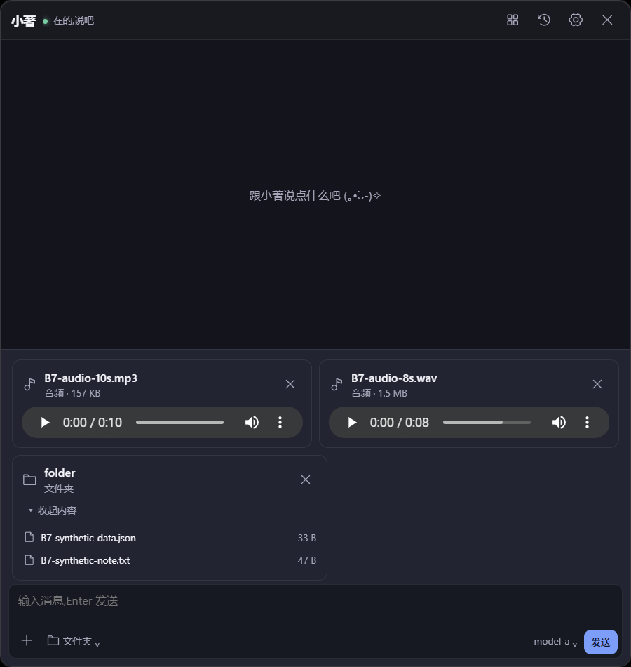
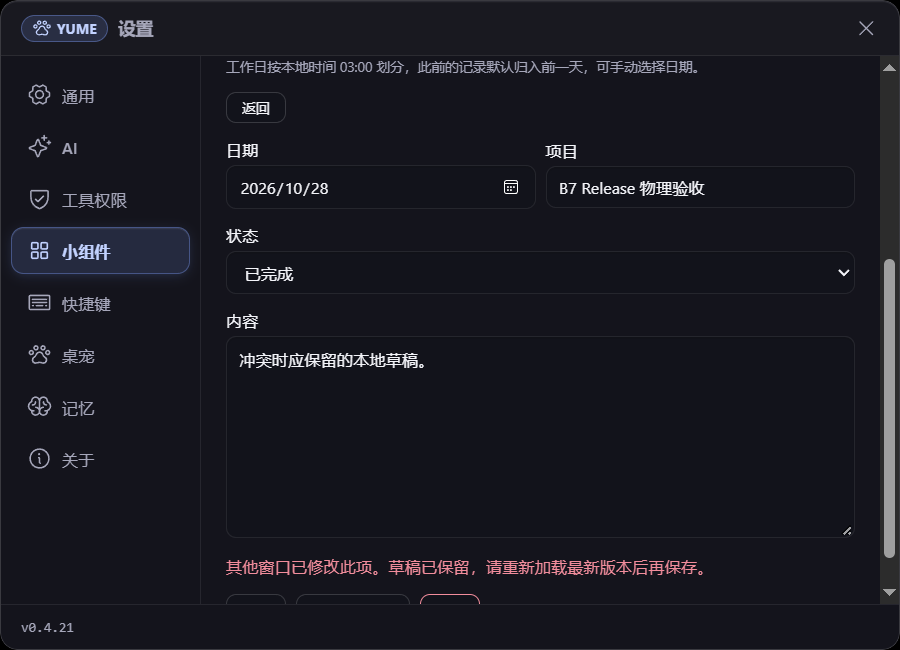
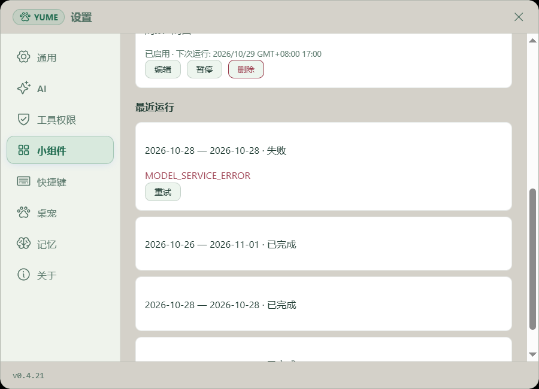
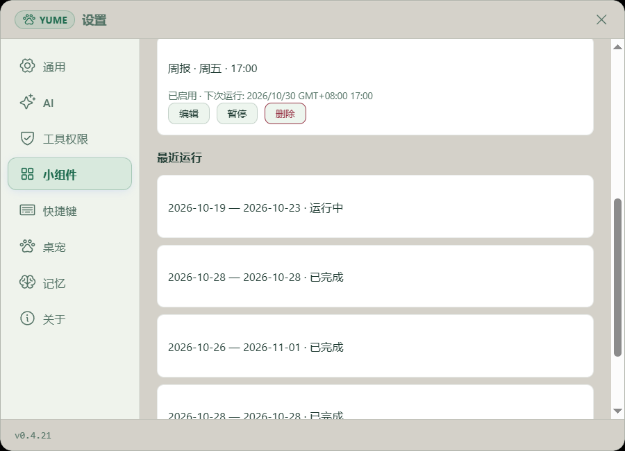
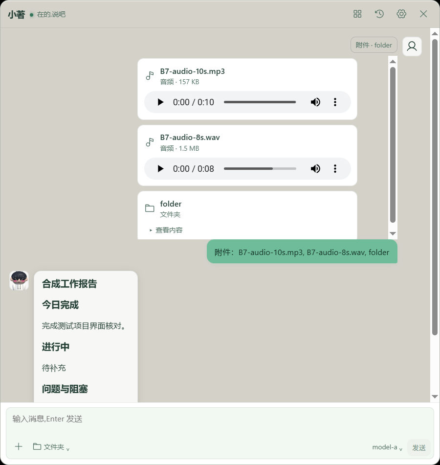

# B7 Windows release 附件与工作日志：2026-10-28 B7 仍在进行中。当前分支与提交为 codex/yume-performance-b6 / db07e5b，版本 0.4.21。本轮复用前一日经 SHA 核验的隔离 release QA 二进制，没有修改产品源码；835 个原有改动文件在本轮结束时与开始快照一致。 ## 实际结果 - 原生文件选择器选入 MP4 并播放至终点（30,034 ms）、连续进度手势、发送和历史切换；输入区再拖入后播放中移除。此前 MP4 正文物理拖放在 10 月 27 日通过。取消选择器保留合成草稿。 - MP3、WAV 和文件夹在正文与输入区真实拖放，MP3 播放、暂停、回退；WAV 完整播放、暂停（0.314 秒）与进度拖至 5.448 秒；文件夹展开显示两个合成文件。坏视频显示无法播放提示，卡片可移除。三项发送后切换会话和重启后恢复。 - 工作日志：两条合成记录、日报/周报生成、人工版本保存、第二调用者制造的冲突保留草稿并加载最新版本、来源变更与候选版本采用。复制与两份重名 Markdown、TXT 的内容和 SHA 一致；导出文件已清理。 - 周计划创建、修改、暂停/启用和取消删除；401 合成故障经三次自动尝试失败，真实点击重试后第 4 次成功。来源删除保留报告并标记；直接关联的日报随来源删除，间接关联周报保留并标记，随后单独删除。 - 停止后的隔离数据库构造最近漏周；重启实际进入运行，真实暂停后取消。请求发出并超过 60 秒服务延迟后仍取消且未归档；没有单独证明响应已被客户端接收。重启保留历史与浅色主题；固定窗口浅深色表面已观察。 - 十次普通重复启动退出 0，主进程和侧车身份保持；这不是活跃工具进行中二次启动的验收。 [结果与边界](summary.json) · [视频事件](evidence/phase1-video-acceptance.json) · [音频事件](evidence/probe-wav-seek.json) · [导出](evidence/export-verification.json) · [失败](evidence/worklog-retry-final.json) · [重试](evidence/worklog-retry-success.json) · [运行中暂停](evidence/worklog-running-paused.json) · [延迟后回读](evidence/worklog-late-result.json) · [文件 SHA](evidence-manifest.json) ## 限制和后续 六库完整性检查均为 ok，检查后发现隔离宿主在最后一次快照后启动了一个新侧车，造成首次清理文件占用；该进程已按父进程、出生时间和路径单独核验停止，随后两隔离根及临时监听端口清理成功。因此不把六库检查描述为所有进程均已停止后的结果。正常 release 从校验过的缓存恢复；本日未重新构建或重跑全套。10 月 27 日单次完整前端回归为 172/172 文件、1367 pass / 0 fail / 8 skip。 待继续：活跃工具期间二次启动、Aborted 文案、其余恢复/迁移、PDF 堆与 RSS、硬件与生产对照、历史回执恢复读取的性能复核和最终完整门禁；真实模型意图与 Mac 专有项目单列。Windows 预计 2–3 轮集中工作，若有新的阻断则 3–4 轮；这是估计，不表示 B7 已通过。未提交、推送、安装或发布。 原始材料位于 E:\Codex\工作伙伴\reports\yume-b7-release-acceptance-20261028；便携包不包含私有选择器截图、其他程序窗口截图、桥接令牌或数据库。




